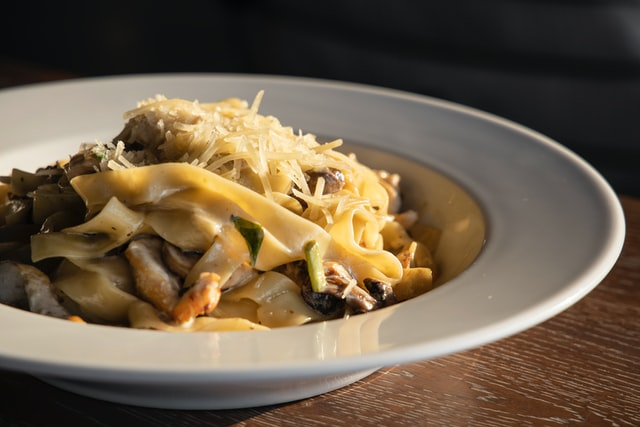

Mushroom Pasta

Simple creamy mushroom pasta recipe. I do this now and then as a treat and to change up my normal tomatoey pasta routine!
Ingredients
Serves Two
- 150g tagliatelle
- Clove of garlic
- One onion (chopped)
- Carton of button mushrooms (sliced)
- 200ml double cream
- Zest of one lemon
- Salt and pepper
- Parmesan
Steps
- Put the pasta in a pan of salted boiling water and follow the packet instructions.
- Heat olive oil in a pan, then gently heat onion for ten minutes. Then add the chopped garlic.
- Add the sliced mushrooms and gently fry for ten minutes until soft.
- Add double cream and heat, season.
- Drain pasta and toss with sauce.
- Serve with lemon zest and parmesan and plenty of black pepper.
Home